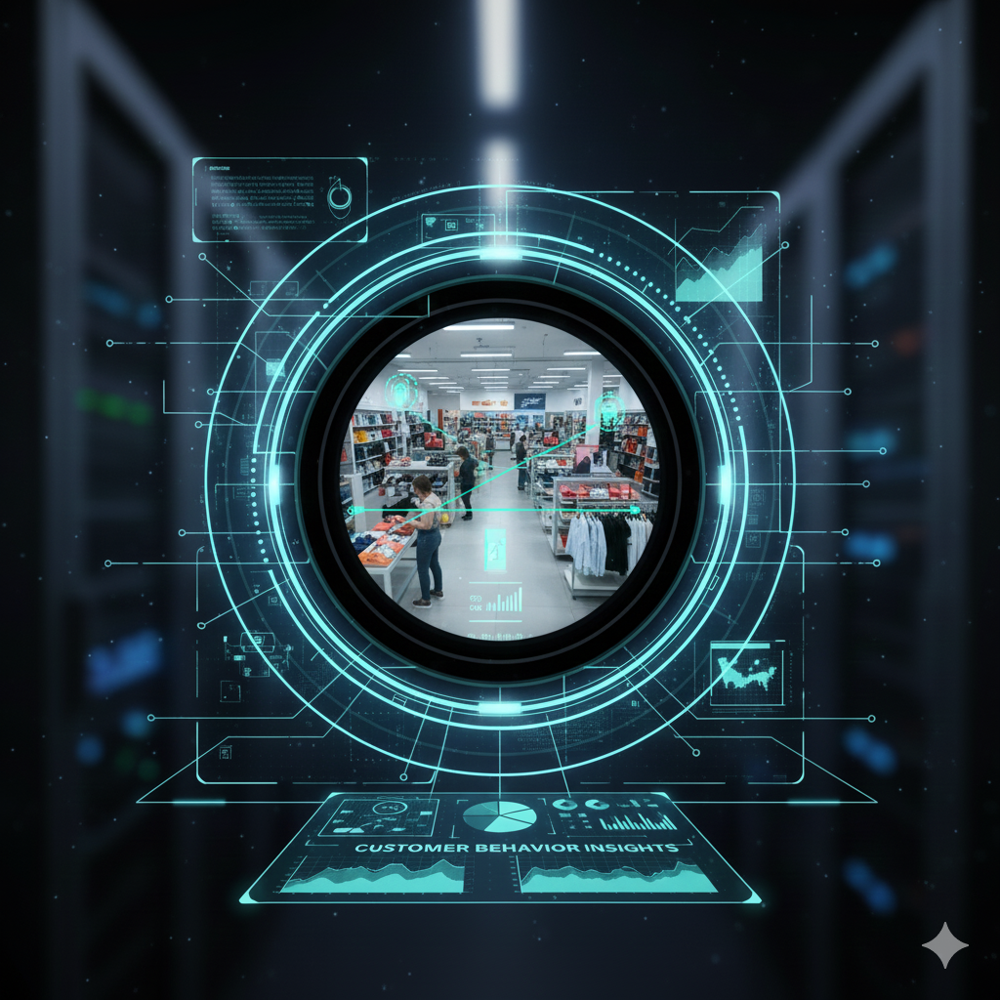

리테일(매장) Retail
고객 경험 · 매장 운영 효율 Customer Experience & Store Operations
고객 동선 분석, 대기열 및 카운터 혼잡 감지, 도난 의심 행동 식별, 피크 타임 분석 등을 통해 매장 운영과 마케팅 전략을 고도화할 수 있습니다. Customer flow analytics, queue detection, suspicious behavior detection, and peak-time analysis help optimize store operations and marketing strategies.